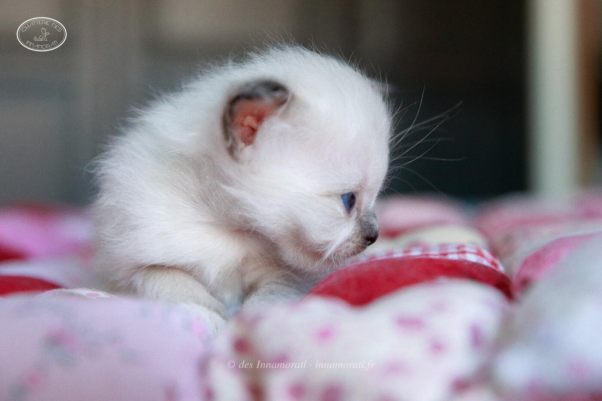
RobeMâle · Seal point
ParentsBirmiao Anaïs × Mac Leod Duncan du Castel Walou
StatutAdopté
Album13 photos, de juillet 2018 à janvier 2025


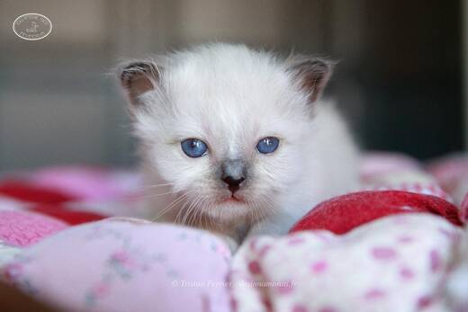

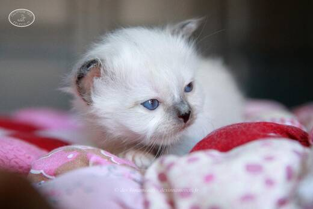

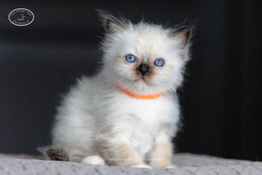

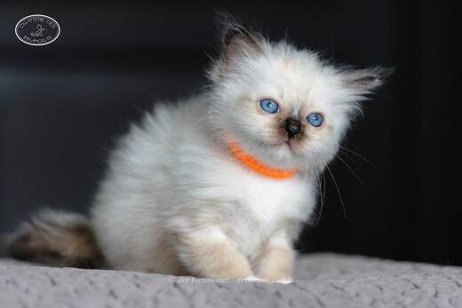

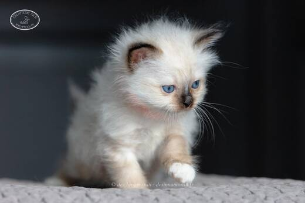

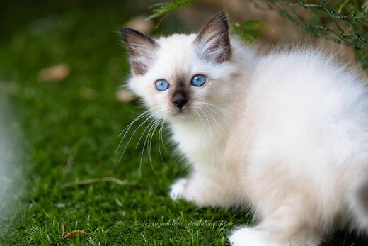

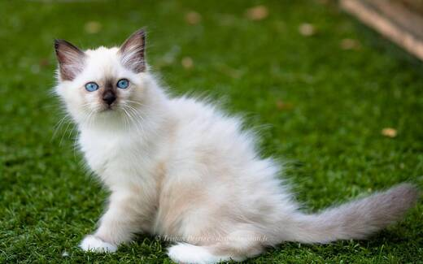

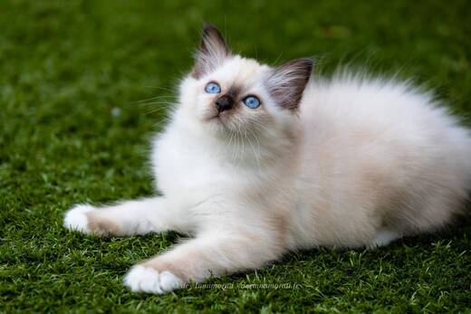

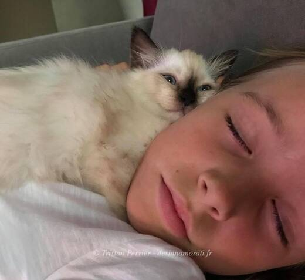

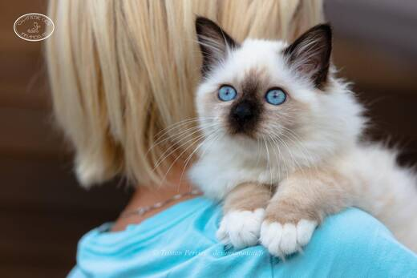

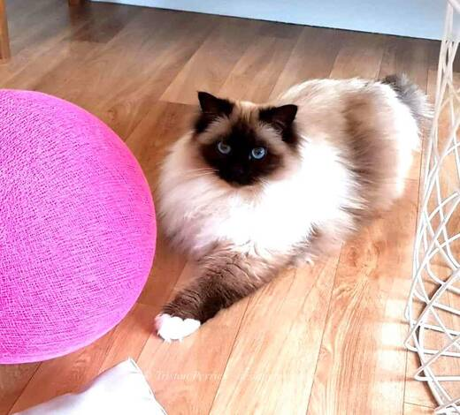

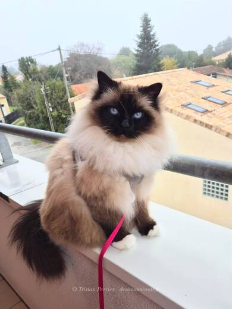
Photos réduites et marquées. Elles appartiennent à la Chatterie des Innamorati et ne peuvent pas être reprises dans une annonce.